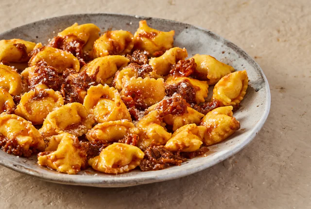

Speed without shortcuts.
For quick service restaurants, cafés, pubs, bars and single-site golf clubs. HACCP that fits a fast kitchen, allergen control your crew can follow, daily checks in under a minute, and an unannounced audit that earns the Safe to Trade mark on the door.
Volume, speed and turnover of staff. The safety system has to be faster than the kitchen.
Everything you need. Nothing you don't.
Safe to Trade audit
Independent, unannounced certification for the sites that want a visible mark on the door and a listing on safetotrade.com.
HACCP-based food safety management
Chef-friendly routines that turn legislation into daily tasks. Safe methods, policies and forms on the tablet.
RiskProof software
Digital documentation, scheduled checks, alerts and dashboards across every site. Inspection-ready at any moment.
Alerts and escalation
Missed or failed checks escalate to the right manager automatically. Nothing waits for the weekly visit.
Safety Advice Line
Environmental Health Practitioners on call for incidents, allergen queries and complaints, with every case logged.
Training and onboarding
Simple modules that get new crew to standard quickly and keep it there through turnover.
Every pub visible from head office. Every incident dealt with the same night.
Leased, tenanted or managed, a pub estate has the same problem: the only way to know what is happening is to visit. RiskProof gives central reporting across every site. The Safety Advice Line, staffed 24/7 by Environmental Health Practitioners, takes the 11pm call.
- Central compliance overviewReplace the paper system with one dashboard across the estate.
- BDM training and capability sessionsRun by a former BDM, so the results and the actions make sense.
- Impressive to the EHOA system they trust, which shows up in FHRS scores.
Built for the people running the pass and the estate.

Consistency you can see without driving to it.
Group-wide dashboards show which sites are on track and which need attention. New openings run the same routines from day one.
- Site, area and brand-level reporting
- Risk trends before they become incidents
- Onboarding new managers from the system, not the binder

Opening checks done before the first order.
Scheduled checklists with timers on a tablet. Photos where it matters. Nothing filled in from memory at close.
- Daily checks in under a minute each
- Alerts when something is missed
- Everything the EHO asks for in one place

Food safety that keeps up with the pass.
HACCP written for real kitchens, with allergen control the whole crew can follow at speed.
- Fridge, freezer and cooking temperature logs with timers
- Allergen matrix current on every device
- Cleaning schedules that log themselves

Due diligence you can produce in seconds.
Every check, incident and action is logged with a timestamp. The Safety Advice Line records every case.
- Complete digital audit trail
- Incident and allergen query support from EHPs
- Standardised routines across brands
A sequence, not a sales cycle.
Six steps from kick-off to certified. Timings are typical for a multi-site group and flex with your estate.
Kick-off and helpline live
A dedicated onboarding manager who knows your sector maps the rollout to your brand and sites. Your Safety Advice Line is switched on from day one.
RiskProof set up and teams trained
The platform is configured to your sites and structure. Remote or onsite training so every team member, front of house to kitchen, is confident before go-live.
Your safety essentials delivered
Safe to Trade standards, assessment frameworks and the Responsible Persons Safety Guide, tailored to how you operate.
Onsite review and account manager
An Environmental Health Practitioner visits to review management systems and risk assessments. You meet your Safety Account Manager, your ongoing partner.
Unannounced Safe to Trade audit
An impartial audit certifies your business. Once approved you receive the mark, a media pack and digital assets to promote it.
Review, refine, grow
Regular check-ins, actionable insights and continual improvement keep standards sharp across every site as the estate grows.

From take-aways and recipe kits to dine-in dishes, Pasta Evangelists is now Safe to Trade Approved, meeting the highest standards in food safety, hygiene and allergy awareness. Just look for the logo and eat with confidence.Pasta EvangelistsSafe to Trade Approved
Questions operators ask
Who is Shield Assure Food Service for?
Quick service restaurants, cafés, pubs, bars and single-location golf clubs. Multi-site groups and single operators both use it.
How long do daily checks take?
Star Pubs & Bars went from around two hours on paper to 30 to 60 seconds per check on an iPad.
Does it handle allergens?
Yes. Allergen management is built into the daily routines and the food safety management system, with EHPs available for queries.
Can we run it across franchisees?
Yes. Every site runs the same routines and reports into the same dashboards, whatever the ownership model.
What if something goes wrong at 11pm?
The Safety Advice Line is staffed by Environmental Health Practitioners 24/7. Every case is logged for due diligence.
Ready to lead with confidence across every site?
- A 30 minute walkthrough of RiskProof, set up for your sector
- Straight answers on what Safe to Trade certification involves
- A view of what your first 90 days would look like